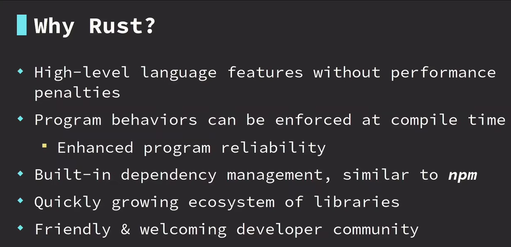

视频链接
1
1-1 intro

1-2 data types


1-3 variables
变量是将数据分配到临时内存位置的一种方式


变量默认不可变，使用 mut 关键字可以使之可变
1-4 functions


1-5 打印宏 println macro
调用宏需要加!符号

1-6 control flow if

1-7 repetition 循环


1-8 setup rust


1-9 comment 注释

1-10 activity functions

fn first_name(){
println!("jayson");
}
fn last_name(){
println!("lennon");
}
fn main() {
first_name();
last_name();
}

1-11 numeric types & basic arithmetic
// 1-11 numeric types & basic arithmetic
// cargo run --bin a
fn sub(a: i32, b: i32) -> i32 {
a - b
}
fn main() {
let sum = 2 * 2;
let value = 10 - 5;
let div = 10 / 2;
let mult = 5 * 5;
let sub = sub(8, 3);
let rem = 6 % 3;
let rem2 = 6 % 4;
println!("sum: {}\nvalue: {}\ndiv: {}",
sum, value, div);
println!("mult: {}",mult);
println!("sub: {}",sub);
println!("rem: {}",rem);
println!("rem2: {}",rem2);
}
1-12 activity basic math

fn sum(a: i32, b: i32) -> i32 {
a + b
}
fn display_result(result: i32) {
println!("{:?}", result)
}
fn main() {
let result = sum(2, 3);
display_result(result)
}
2
2-1 control flow with if & else
// control flow with if & else
fn main(){
let age=15;
if age>=21{
println!("ok to purchase")
}else {
println!("cannot purchase")
}
}
2-2
// activity logic with if else
fn main() {
let my_bool = true;
if my_bool {
println!("hello");
} else {
println!("goodbye")
}
}
2-3
// activity logic with if else
fn main() {
let n = 7;
if n > 5 {
println!(">5")
} else if n < 5 {
println!("<5")
} else {
println!("=5")
}
}
2-4 Match


2-5
// match demo1
fn main() {
let my_name = "Bill";
match my_name {
"Jayson" => println!("that is my name"),
"Bob" => println!("not my name"),
"Alice" => println!("hello alice"),
_ => println!("nice to meet you!"),
}
}
2-6
// match demo2
fn main() {
let my_bool = false;
match my_bool {
true => println!("it's true"),
false => println!("it's false"),
// _ => {},
}
}
2-7
// match demo3
fn main() {
let my_num = 2;
match my_num {
1 => println!("one"),
2 => println!("two"),
3 => println!("three"),
_ => println!("other"),
}
}
3
3-1
// loop
fn main() {
let mut i = 3;
loop {
println!("{:?}", i);
i = i - 1;
if i == 0 {
break;
}
}
println!("done")
}
3-2
// loop demo1
fn main() {
let mut n = 1;
loop {
println!("{:?}", n);
if n == 4 {
break;
}
n = n + 1;
}
}
3-3
// loop demo2
fn main() {
let mut i = 1;
while i <= 3 {
println!("{:?}", i);
i = i + 1;
}
}
3-4
// loop demo3
fn main() {
let mut counter = 5;
while counter >= 1 {
println!("{:?}", counter);
counter = counter - 1;
}
println!("done")
}
4
4-1


4-2
enum Direction {
Left,
Right,
Up,
}
fn main() {
let go = Direction::Left;
match go {
// 如果枚举里有的,而没有对应match,会报错
Direction::Left => println!("go left"),
Direction::Right => println!("go right"),
Direction::Up => println!("go up")
}
}
4-3
// enum demo1
enum Color {
Red,
Yellow,
Blue,
}
fn print_color(c: Color) {
match c {
Color::Red => { println!("red") }
Color::Yellow => { println!("yellow") }
Color::Blue => { println!("blue") }
}
}
fn main() {
print_color(Color::Blue)
}
4-4


4-5
// struct demo
struct GroceryItem {
stock: i32,
price: f64,
}
fn main() {
let cereal = GroceryItem {
stock: 10,
price: 2.99,
};
println!("stock: {:?}",cereal.stock);
println!("price: {:?}",cereal.price);
}
4-6
// enum struct demo
enum Flavor {
Sparkling,
Sweet,
Fruity,
}
struct Drink {
flavor: Flavor,
fluid_oz: f64,
}
fn print_drink(drink: Drink) {
match drink.flavor {
Flavor::Sparkling => { println!("sparkling") }
Flavor::Sweet => { println!("sweet") }
Flavor::Fruity => { println!("fruity") }
}
println!("oz: {:?}", drink.fluid_oz);
}
fn main() {
let sweet = Drink {
flavor: Flavor::Sweet,
fluid_oz: 6.0,
};
print_drink(sweet);
let fruity = Drink {
flavor: Flavor::Fruity,
fluid_oz: 10.0,
};
print_drink(fruity);
}
4-7


4-8
// tuple demo1
fn main() {
let coord = (2, 3);
println!("{:?} {:?}", coord.0, coord.1);
let (x, y) = (2, 3);
println!("{:?} {:?}", x, y);
let (name, age) = ("Emma", 20);
println!("{:?} {:?}", name, age);
let favorites = ("red", 14, "TX", "pizza", "TV SHOW", "home");
let state = favorites.2;
let place = favorites.5;
println!("{:?} {:?}", state, place);
}
4-9
// tuple demo2
fn coordinate() -> (i32, i32) {
(1, 7)
}
fn main() {
let (x, y) = coordinate();
if y > 5 {
println!(">5")
} else if y < 5 {
println!("<5")
} else {
println!("=5")
}
}
4-10


4-11
enum Access {
Admin,
Manager,
User,
Guest,
}
fn main() {
let access_level = Access::Guest;
let can_access_file = match access_level {
Access::Admin => true,
_ => false,
};
println!("can access: {:?}", can_access_file)
}
4-12
fn print_msg(gt_100: bool) {
match gt_100 {
true => { println!("its big") }
false => { println!("its small") }
}
}
fn main() {
let value = 100;
let is_gt_100 = value > 100;
print_msg(is_gt_100)
}
5-1 intermediate memory


5-2 ownership

(move)：调用第一次display_light时，dull的所有权转移到了display_light，再次调用，dull已经没有值(被所有者使用后删除)

(borrow)：因为是借用，传递的是变量引用（地址），所以调用多少层display都不会删除该变量（dull）


5-3
struct Book {
pages: i32,
rating: i32,
}
fn display_page_count(book: &Book) {
println!("pages = {:?}", book.pages)
}
fn display_rating(book: &Book) {
println!("rating = {:?}", book.rating)
}
fn main() {
let book = Book {
pages: 5,
rating: 9,
};
display_page_count(&book);
display_rating(&book);
}
5-4 impl
struct Temperature {
degrees_f: f64,
}
impl Temperature {
// Self -> Temperature
fn freezing() -> Self {
Self { degrees_f: 32.0 }
}
fn boiling() -> Self {
Self { degrees_f: 212.0 }
}
// self -> instance
fn show_temp(&self) {
println!("{:?} degrees F", self.degrees_f);
}
}
fn main() {
let hot = Temperature { degrees_f: 99.9 };
hot.show_temp();
let cold = Temperature::freezing();
cold.show_temp();
cold.show_temp();
cold.show_temp();
let boiling = Temperature::boiling();
boiling.show_temp();
boiling.show_temp();
boiling.show_temp();
}
6-1
struct GroceryItem {
quantity: i32,
id: i32,
}
fn display_quantity(item: &GroceryItem) {
println!("quantity: {:?}", item.quantity);
}
fn display_id(item: &GroceryItem) {
println!("quantity: {:?}", item.id);
}
fn main() {
let my_item = GroceryItem {
quantity: 3,
id: 99,
};
display_quantity(&my_item);
display_id(&my_item);
}